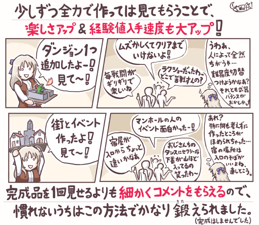

■2018-10-27 (土) ゲーム開発者の地図 1周年！▼
おかげさまでちょうど去年発売したKindle書籍が一周年となりました！
ので、落書き1枚と人気だった記事をご紹介！
※開発日誌マスコットのラッシー、ハロウィン版。
『ゲーム開発者の地図』の挿絵はこのキャラばっかり17枚分くらい載ってますよ。
ちょうど1年前の10/26に発売したKindle書籍、
『ゲーム開発者の地図 ～20年の個人開発で学んだこと～』
Amazon販売ページへ ￥1,080
に、おかげさまで非常に高いレビュー評価をいただいております！
読んでくださっただけでなくレビューまで書いてくださった皆様、本当にありがとうございます！
で今回は『ゲーム開発者の地図』、1周年記念と言うことで、
Amazonでいただいたレビューやツイッターなどで評価が高そうだった記事をいくつかご紹介！
この開発日誌に当該記事を掲載していますので、本を買わずともすぐに読めます。
【ゲームを完成させる作り方】

私が最近意識している「ゲームを完成させやすい作り方」について紹介した記事です。
レベル1で最小の骨組み作成（最小限のアルファ作成）、
レベル2でそれに肉付け（最小限を完成させてとりあえずリリース可能にする）、
レベル3でさらに成長させる、という方法をとることで、
一旦の完成を早期に持ってきて、その後モチベーションが切れたり
締め切りが来た時点で終わりとする方法について紹介しています。
【楽しくて学べるゲームの作り方】

こちらは上と違い、完成を前提としない代わりに、
作るのが楽しそうで、得られる経験値が何倍にもなる作り方をご紹介！
全力で前から作りつつ少しずつ「見せる」ことで、
自分の作れる品質や量、素質や作る楽しみを知り、己の武器を把握していきます。
私個人は、初っぱなから本気で「完成」を目指すと作る面白みが減ってしまうので
最初は完成を目指さなくてもいいと考えていて、まずはペースを考えずに
全力で作ってみて誰かに見てもらい、自分の使える武器や能力や素質を見極めたり、
何を作れば喜んでもらえるかを知ってから中編以上に挑むのがいいんじゃない？
という考えを持っています。
【バランスが崩れやすい要素の話（3つ）】

「連続攻撃」や「引き算の防御力」、あるいは「変な組み方のウェイトターンバトル」は
あっという間にバランス崩壊を起こすので気をつけた方がいいぞ！ というお話。
もっぱらそれぞれでどういう失敗が発生するかという点をご紹介しています。
この中で出る私の最近のコツ、
「ほとんどの敵は防御力なしでHPだけで耐久度の差を付ける」
というのは、作りやすくなるので個人開発でおすすめしたい点です。
【キャラ作りで意識すること１】
前半は微妙にぼんやりとした語り口になっていますが、
後半の『名前の形』を差別化しようという話はなるほどという方も多かったようです。
文章上においては「名前」も「見た目の一つ」ですから、名前の長さを変えるとか、
大文字と小文字と横棒の場所を各キャラで差別化するようにした方が
一瞬見たときのキャラの区別しやすさは上がりますよね、というお話です。
ブログ内では記事のみですが、Kindle版『ゲーム開発者の地図』内には、
各記事に対してゲーム開発者全7人による考察のコメントも
本文と同じくらいの量、掲載されています。
開発者の実体験からのつらみや、ゲーム開発とゲームプレイに対する
趣味の違いや意見の相違なども見られますので、
開発において参考になる部分もいくらかあるかもしれません。
気になった方はよければぜひ、Kindle版もどうぞ！
『ゲーム開発者の地図 ～20年の個人開発で学んだこと～』
Amazon販売ページへ ￥1,080
（Kindle Unlimitedにご加入中の方なら無料で読めます）
2018-10-27 (土)  カテゴリ: 開発日誌
カテゴリ: 開発日誌
 カテゴリ: 開発日誌
カテゴリ: 開発日誌